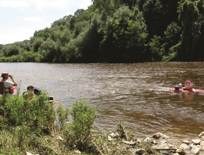

Great Lakes Tributary Assessment for Asian carp Habitat Suitability and Development of a Tributary Assessment Tool

This project focuses on determination of a minimum river length, water velocity, and water temperature characteristics required for spawning and growth of bighead and silver carp, in order to assess the risk of these carp becoming established in Great Lakes tributaries. This determination requires data collection on Asian carp life history traits and rivers likely to be vulnerable to Asian carp spawning. Information about the Asian carp eggs and larvae and river hydraulics is combined into a tributary assessment tool for determining risk of spawning and recruitment in rivers not yet affected by Asian carp. On rivers where Asian carp are already established, this tool can be used to target controls methods such as placement of egg settling zones or spawning disruptions.
USGS researchers have determined the densities of the eggs as these develop, and how much time the bighead and silver carp require to begin swimming and migrating laterally from flowing water into nursery habitat. This information about egg transport requirements was used to create a Tributary Assessment Tool also referred to as the Fluvial Egg Drift Simulator (FluEgg) model. The development of this tool was a collaborative effort between USGS and the University of Illinois. The tool takes into account the hydraulics of a river (water velocity and dispersion rates) and the water temperature (affects egg and larvae development rates) in order to determine if a river is sufficiently long and the velocities high enough for the eggs to be kept in suspension to develop into larvae.
The biological and Asian carp life history research conducted by USGS has made significant contributions to understanding the development of bighead, silver and grass carp as well as how the development rate changes with water temperature. The resulting publications and datasets will help the entire scientific community in the study of Asian carp.
The hydraulic and water-quality data collected on Great Lakes tributaries along with information about potential spawning locations and egg settling zones in reaches along the rivers help managers target locations and control measures in rivers where eggs may settle or Asian carp may spawn. The hydraulic data analysis from this project may also lead to control strategies such as determining placement of low-head dams to create settling zones that disrupt egg development but cause fewer ecological impacts than other control strategies such as poisons.
The Tributary Assessment Tool developed in this project can be used by managers to efficiently identify Great Lakes tributaries that pose elevated risk for reproduction of bighead and silver carp by using hydraulic characteristics to simulate egg travel times and likelihood of eggs staying in suspension until development.
- Asian carp can successfully spawn in rivers as short as 16 miles as opposed to the 62 mile length previously assumed to be the minimum.
- Asian carp eggs can stay suspended in rivers with velocities as low as 15-25 centimeters/second.
- Many more Great Lakes tributaries would be at risk of having Asian carp spawning and recruitment with the new understanding of the river length and flow requirements.
- o FluEgg outputs provide valuable insights into egg suspension and settlement by predicting the drifting behavior of the eggs based on river characteristics.
A USGS Scientific Investigations Report, Hydraulic and water-quality data collection for the investigation of Great Lakes tributaries for Asian carp spawning and egg-transport suitability.
A journal article in Ecological Modelling, Development of a Fluvial Egg Drift Simulator to evaluate the transport and dispersion of Asian carp eggs in rivers
Elizabeth Murphy, emurphy@usgs.gov
Illinois Water Science Center
217-328-9726
Duane Chapman
Columbia Environmental Research Center